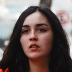
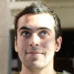

Chilean Winter
Editor's Note
Today the Daily Bruin is publishing a group of stories on the education protests that have been ongoing in Chile since 2011. The on-site reporting was made possible by the Bridget O’Brien Scholarship Foundation, now in its fifth year of funding student journalism at UCLA with global reach and local consequence.
This year’s recipients, Suzy Strutner and Jenna Belhumeur, spent 15 days in Santiago, Chile, visiting schools and attending protest events. They conducted many interviews in Spanish that were translated into English by paid professionals.
The stories and photos, as well as other multimedia content, are online at chileanwinter.dailybruin.com.
As always, this year’s project is dedicated to the memory of the late O’Brien, a photojournalist and former photographer, writer and editor at the Daily Bruin.
The Bruin would also like to dedicate this project to Jessica Lum, who was a former Daily Bruin photo editor and traveled to Thailand as one of the first recipients of the Bridget O’Brien Scholarship. Lum died this January at the age of 25 after a long battle with cancer.
Media


Profiles


Julia Carrillo


Jorge Villas

EDIT: STILL NEED HIS PICTURE Gustavo Beaufont

Aliza Sepulvo

Talia Allende
Dalia Coto

Jorge Cabezas

Miguel Ramirez

Ariel Devila

Emmanuel Aguilar-Posada
Anael Gutierrez

Christian Blanco

Anely Ramirez

Gabriel Boric
Unveiling individual faces of protest
By Jenna Belhumeur
While Bridget O’Brien’s career as a journalist began with a story on coffee, my 15-day experience in Chile – made possible by a grant in the Daily Bruin alumna’s name – can be traced back to a coffee table.
During the 2011 winter break, I was lying on my friend’s couch when I glanced over to the coffee table and noticed the picture of a veiled figure on the cover of a magazine.
Time magazine named “The Protester” the 2011 person of the year. From the Arab Spring, to the movements in Athens and Spain, to the closer-to-home Occupy Wall Street and Oakland phenomena, it is evident that 2011 was a year where people from different countries around the world rose up to demand change.
At this time I had just returned from a fall semester spent abroad in Rome, where I had been slightly removed from the incidents occurring at our very own University of California campuses. Though I was more than 6,000 miles away, I still had heard about the uproar of the Occupy movement. Sitting in my apartment in Rome, I watched the viral YouTube video of protesters from UC Davis getting pepper-sprayed in the face.
The UC is no exception to this phenomenon sweeping the world, I mused.
With the picture of the veiled figure on my mind, I began researching other movements sparked by youth frustrations in 2011.
Seven months later, I landed in Santiago, Chile – at about the one-year anniversary of the Chilean Winter. I was ready to report on the educational protests sweeping the country that I believed strongly resembled those at the UC. At the time, I thought of the protests at the UC and in Chile as part of a single movement of unrest that seemed to be global in scale.
In Chile, we reported on marches that included more than 150,000 people and ended with tear gas, water cannons, street fires and violence against the carabineros, or police. We heard car horns sound off in unison with the chanters. We witnessed construction workers yell their support from the sidelines. We saw grandparents, professors, small children march alongside the students.
The scenes were all impressive, but none compared to a brief conversation I had with a couple of 13-year-olds.
About midway through our time in Chile, Suzy and I unexpectedly stumbled upon a middle school with around 100 seventh and eighth grade students lined up outside.
Chairs and desks hung from the school’s gates, symbolizing that the school was en toma – or overtaken by students who stopped classes in support of the movement.
The boys talked, laughed and joked around. One boy clutched a megaphone. Some listened to a portable radio while others held onto backpacks or soccer balls.
Some of these students had been spending day and night occupying the school. Others turned out to join them as they waited patiently to cast their ballot at a makeshift voting station. On a bulletin board outside the school hung computer papers pieced together, with the word “Votaciones,” or “Votes,” printed on them.
As is the norm in Chilean protest culture, participants of this toma voted on whether their school should remain en paro, or on strike. The students ran the whole voting process, and ultimately decided to continue the toma.
“We have a basic right as students for quality public education,” one boy told me, as he waited in line while clutching his lunch.
I was struck by the fact that these 13-year-olds were voting to show their support for what protesters believe could be a future where all Chileans could have access to quality education and the opportunity to succeed.
While I had originally gone to Chile with the intent of juxtaposing tales of struggling Chilean students against the UC protests, I soon found I could not draw such an easy, direct connection between the movements.
The notion of voting to shut down a middle school has no parallel in the U.S.
UC students may be taking cues from their Chilean counterparts, adopting protest techniques and organizational structures from a country thousands of miles away, but the Chilean Winter is an entirely different fight for education, with deep historical roots that span across society.
One “Protester” – like that of the magazine image that got me into this project – cannot reflect all movements.
Each protester I spoke to at a UC Board of Regents meeting, each student I spoke to at the occupation of a Chilean middle school, had their own individual story .
Each face of protest is different from the next.
Email Belhumeur at jbelhumeur@media.ucla.edu.